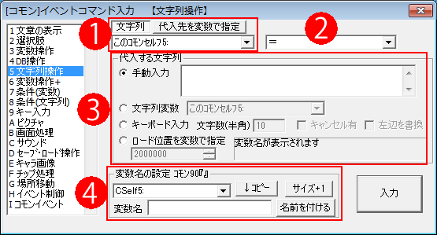
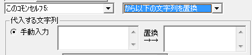

イベントコマンド 【文字列操作】
文字列変数を操作したり、キーボードからの文字入力を受け付けるコマンドです。

【各部の説明】
１．代入先の指定
代入先の文字列変数を選択します。
「代入先を変数で指定」する際は、通常/予備変数に3000000（文字列変数）以上の値を入れて使用してください。
2.代入方法
代入先への代入方法です、次の4種類があります。ここでは、代入先を「左辺」、代入する文字列を「右辺」と呼ぶことにします。
「＝」 … 左辺に右辺をそのまま代入します。
「＋＝」 … 左辺の文字列変数に右辺を追加します。
「上1行コピー」 … 右辺の上1行だけ左辺に代入します。
「上1行切り取り」 … 右辺の上1行を切り取り、左辺に代入します。つまり、この処理を行うと右辺の上1行が消去されます。
「に↓から1文字切り出し」 … 右辺の先頭1文字を切り取り、左辺に代入します。この処理を行うと右辺の先頭1文字が消去されます。全角、半角共に対応しています。
特殊文字の場合は特殊で、1回の処理で\A+なら「\A+」、\c[1]なら「\c[1]」分だけ抜き取ることができ、\r[X,A]など文字列が入る特殊文字の場合は「\r[」だけを抜き取ります。
「に↓から最後1文字切り出し」 … 右辺の最後1文字を切り取り、左辺に代入します。この処理を行うと右辺の最後の1文字が消去されます。全角、半角共に対応しています。特殊文字の場合も、「に↓から1文字切り出し」と同様です。
「に↓のファイル内容読込」 … 右辺のファイル名のデータを読み込み、左辺の文字列変数に格納します。右辺には、「Data/test.txt」という具合に代入してください。
※読み込む文字コードを「UTF-8[標準]」「SJIS」「文字コード自動判別」から選択できます。よく分からなければ自動判別にしてください（Ver3.00より）。
「をファイル↓に出力」 … 左辺の文字列変数の中身を、右辺のファイル名のデータに保存します。
※保存するフォーマットを「UTF-8/BOM有」と「UTF-8/BOMなし」から選べます。通常は「BOM有」で問題ありません。ウディタ上ではどちらでも読み込めますが、「BOM有」の方が読み込み処理が軽くて安全です。(Ver3.10より)
※保存先文字列内に「//」「\\」「..」「./」「.\」「%」「:」「*」「?」「"」「<」「>」「|」が含まれていると保存できませんので注意してください(Ver3.00より)
「に↓のファイルをBase64で読込」 … 右辺のファイル名のデータを読み込み、Base64に変換して文字列変数に格納します。
※Base64：画像など、本来人間がテキスト情報として読めないバイナリデータを「a-z、A-Z、0-9」の64文字のデータに変換します。このBase64形式のデータは、もっぱらオンラインのデータ処理に使われます。
「に↓フォルダのファイルリスト取得」 … 右辺に指定されたフォルダ内のファイル一覧を取得し、左辺に代入します。格納されるのは1ファイルにつき1行なので、各々のファイル名は「上1行切り出し」などを使用して取得してください。なお、暗号化フォルダに対しては機能しません（<<ERROR>>が返されます）。
「から↓の文字列を全消去」 … 左辺の文字列内から、右辺の文字列だけを全て消去します。（例：左辺が「あいうえお」のとき、「い」を全消去すると、左辺が「あうえお」となります）
「に↓から特殊文字を消去して格納」 … 左辺の文字列内から、右辺の文字列に含まれる特殊文字を全て消去します。フォント変更の\f[]などの特殊文字によって生まれた内部コードを全て削除します。\r[X,Y]のYY部分や\img[]指定も、「
] 」が終わる範囲まで消去されます。
「から以下の文字列を置換」 … 左辺の文字列内から、左側の入力欄に入れられた文字列を右側の入力欄に入れられた文字列で置換します。（例：左辺が「あいうえお」の時、「え」を「お」で置換すると、左辺が「あいうおお」になります。コンマ区切り(CSV)のデータを読み込んだ際に、「,」を改行で置換して、1行切り出しで読み込みなどの用途に使えるかと思われます。）

「<から指定文字まで切り出し>」 … 左辺の文字列内から、入力欄に入れられた文字列までだけ切り出します（例：左辺が「あいうえお」のとき、「う」まで切り出すと左辺が「あい」になります）。指定した文字列が見つからない場合、「<<NotFound>>」を返します。
「<から指定文字以降を切り出し>」 … 左辺の文字列内から、入力欄に入れられた文字列以降だけ切り出します（例：左辺が「あいうえお」のとき、「う」以降を切り出すと左辺が「えお」になります）。指定した文字列が見つからない場合、「<<NotFound>>」を返します。
※ファイル入出力や1行、1文字切り出し機能を駆使すれば、キャラデータを他の人と交換したりすることが可能になります！
３．代入する文字列
代入する文字列は、次の4種類の方法で指定できます。
・手動入力 … 手動で文字を入力します。この入力には\v[?]や\s[?]といった特殊文字も使用可能です。
・文字列変数 … 他の文字列変数を読み込みます。
・ロード位置を変数で指定 … 「変数の値」の文字列変数を読みに行きます。たとえば読み込んだ変数値の値が3000002（文字列変数2番のコード）という風に格納されていれば、文字列変数2番を読みに行きます。
・キーボード入力 … プレイヤーにキーボードからの文字入力をうながします。キャンセル有りにするとEscキーで入力をキャンセルすることができます。なお、この文字入力には日本語も使用可能です。左辺を置換にチェックをすると、左辺に元から入っていた文字列が入力された状態で文字入力をさせることができます。
※テストプレイ時に限り、『キーボード入力』中に「F7〜F9キーなどのデバッグメニューを表示する」あるいは「F11キーで再読み込みする」と「 キーボード入力中の文字のサイズが変わってしまいます 」が、文字サイズを設定するタイミングは「キーボード入力の開始時」のみなので、この動作自体は仕様です。(2017/3/7追加)
４．変数名の設定
この欄で文字列変数に名前を付けたり、最大数を増やしたりすることができます。設定したい変数をプルダウンリストから選び、設定したい名前を入力したら「設定」ボタンを押してください。
「↓コピー」ボタンは、プルダウンリストで選択中の文字列変数の名前を下にコピーします。
「サイズ+1」ボタンは、文字列変数の最大数を一つ増やします。
【隠し機能 <<〜〜>>の裏コード入力でパラメータを得たり隠し処理を行う】
実はこの文字列操作コマンドには、<<〜>>から始まるコマンドを指定することで何らかのデータ取得処理が行える隠し機能があります。
これは「に↓のファイル内容読込」を選んだ場合だけ実行できます。
（このコマンドはファイル名を指定するため先頭に「<」が来ることはありえないため、1文字目に「<」があれば裏コードだと分かるのです）
【共通した手順】
1.「文字列操作」コマンドで「に↓のファイル内容読込」を選ぶ。
2.「手動入力」欄を選び、以下のコードを入力してください。
【A.<<GET_SOUNDTIME>>(ファイル名) → 音声ファイルの再生時間をミリ秒で得る】 （Ver2.264以降)
3-A. 「手動入力」欄に「<<GET_SOUNDTIME>>Data/SE/effect.ogg」と指定すると、格納先の「文字列変数」に「Data/SE/effect.ogg」の「再生時間（ミリ秒）」の数字が文字列として格納されます。
たとえばeffect.oggが1.3秒の音なら、「1300」の文字列が格納されます。あとは「変数操作」で「右辺」に「↑で格納した文字列変数」を指定し、数字変数に格納してご利用ください。
※たとえば「変数操作」コマンドの「右辺」に「1600005」と入れると、「コモンセルフ変数5」に入った文字列を「数字」に変換して処理できます。
【B.<<GET_FILE_EXIST>>(ファイル名) → ファイルまたはフォルダが存在するか確認する】（Ver2.271以降)
3-B.「手動入力」欄を選び、「<<GET_FILE_EXIST>>Data/Graphic/Edy.png」と指定します。
実行されると、「Data/Graphic/Edy.png」が存在すれば格納先の「文字列変数」に「1」が、存在しなければ「0」が文字列として格納されます。
このコマンドはフォルダに対しても1が返されます（ただし、末尾に「/」や「\」が入っていると0が返されます。「Data/Graphic」などと指定してあれば「1」が返ります）。
「?」は任意の半角1文字、「*」は任意の文字列として、ワイルドカード指定が可能です。
【C.<<GET_DIRECTORY_EXIST>>(フォルダ名) → フォルダが存在するか確認する】 （Ver3.241以降）
3-C.「手動入力」欄を選び、「<<GET_DIRECTORY_EXIST>>Data/Graphic」と指定します。
実行されると、「Data/Graphic」がフォルダとして存在していれば格納先の「文字列変数」に「1」が、存在しなければ「0」が文字列として格納されます。
このコマンドでファイルを指定した場合は「0」が返るため、「<<GET_FILE_EXIST>>」とうまく使い分けてください。
【D.<<GET_MAPEVENT_ID_FROM_NAME>>(イベント名) → [マップイベント名]からマップイベント番号を得る】（Ver3.00以降）
3-D.「手動入力」欄を選び、「<<GET_MAPEVENT_ID_FROM_NAME>>エディ」と指定します。
コマンドが実行されると、マップイベントの中に「エディ」という名前のイベントが存在すれば格納先の「文字列変数」に「そのマップイベントID(同名が複数ある場合は一番大きいID）」が、存在しなければ「-1」が文字列として格納されます。
【E.<<GET_MAPEVENT_NAME_FROM_ID>>(イベントID) → [マップイベントID]からマップイベント名を得る】（Ver3.00以降）
3-E.「手動入力」欄を選び、「<<GET_MAPEVENT_NAME_FROM_ID>>7」などと指定します。
コマンドが実行されると「該当IDのマップイベント名」（「ハカセ」など）が返されます。
該当IDのマップイベントが存在しない場合は「<<NotFound>>」が文字列として格納されます。
【F.<<GET_COMMONEVENT_ID_FROM_NAME>>(イベント名) → [コモンイベント名]からコモンイベント番号を得る】（Ver3.00以降）
3-F.「手動入力」欄を選び、「<<GET_COMMONEVENT_ID_FROM_NAME>>▲装備取得」などと指定します。
コマンドが実行されると、コモンイベントの中に「▲装備取得」という名前のイベントが存在すれば格納先の「文字列変数」に「21」など「そのコモンイベントID (同名が複数ある場合は一番大きいID）」が、存在しなければ「-1」が文字列として格納されます。
【G.<<GET_MAPEV_FILENAME>>(イベントID) → [マップイベントID]からマップイベントの画像ファイル名を得る】（Ver3.00以降）
3-G.「手動入力」欄を選び、「<<GET_MAPEV_FILENAME>>7」など指定します。
コマンドが実行されると、「マップID12番の今のキャラチップの画像ファイル(CharaChip/[Chara]Doctor.pngなど)」が返されます。
そのIDのイベントがなければ「<<NotFound>>」が返されます。
現在表示されているのがタイル画像なら「<TILE>15」(タイル15番)のように格納されます。
【H.<<GET_TILE_FILENAME>>(タイルセット番号) → [タイル番号の数値]番のタイルファイル名を得る】（Ver3.00以降）
3-H.「手動入力」欄を選び、「<<GET_TILE_FILENAME>>1」など指定すると、現在マップの「オートタイル1番のタイル画像ファイル名(MapChip/[A]WaterFall2_pipo.pngなど)」が取得できます。
番号指定は、0なら基本タイル画像、1〜31がオートタイル画像です。
【I.<<GET_FILENAME_FROM_PICTURE>>(ピクチャIDの数値) → ピクチャの画像ファイル名を得る】（Ver3.00以降）
3-I.「手動入力」欄を選び、「<<GET_FILENAME_FROM_PICTURE>>10001」など指定すると、「ピクチャID10001番に読み込まれた画像ファイル名(「SystemFile/WindowBase_amania.pngなど)」が取得できます。
もしそれが文字列ピクチャなら、ピクチャに指定された「文字列」を返します。
【J.<<GET_STRING_WIDTH_COUNT>>(文字列) → 文字列の長さを半角1、全角2換算で得る】（Ver3.00以降）
3-J.「手動入力」欄を選び、「<<GET_STRING_WIDTH_COUNT>>あああAAAA」などと指定すると、[全角2×3]＋[半角1×4]で「10（文字列の長さ）」が取得できます。
改行や特殊文字はカウントしません（ただし「\\」（半角￥マーク）は1とカウントします）。
【K.<<CUT_STRING_WIDTH_COUNT=(数値)>>(文字列) → (数値)の横幅分で文字列をカットして得る (横幅は半角文字で1、全角文字で2)】（Ver3.23以降）
3-K.「手動入力」欄を選び、「<<CUT_STRING_WIDTH_COUNT=8>>あああAいAAA」などと指定すると、「あああA」が取得できます。(あああA=横幅「7」分。まだ半角1文字だけ入りますが、次の「い」を入れると横幅「9」になってあふれるので「い」は入りません）
特殊文字や改行はカウントしませんが、「\\」（半角￥マーク）は1とカウントします。
「UTF-8」化で「キーボード入力文字列」のバイト数が調節しにくくなったため、入力された文字列を適切な長さに切り取る目的で搭載されました。
【隠し機能 自動キー入力でEnterを入れて「キーボード入力」を強制決定する】
この「文字列操作」の「キーボード入力」中、並列イベントなどで「キー入力」コマンドの「自動キー入力」を使って「Enter（キーコード：128）」を入力すると、そこまで入力した分でキーボード入力が決定されます。
時間制限付きの文字入力イベントなどに使えるでしょう、。